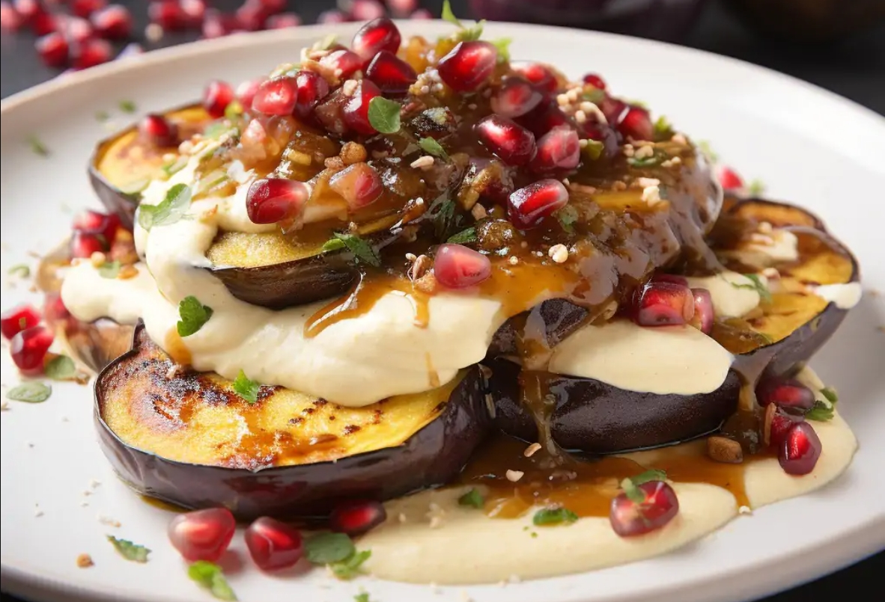

Баклажаны с тминным йогуртом

- баклажаны — 3 шт
- чеснок
- кумин
- греческий йогурт — 200 г
- свежая зелень (петрушка, кинза или мята)
Разогреть духовку до 220°C. Застелить противень пергаментной бумагой. Нарезать предварительно очищенные полосами баклажаны толщиной примерно 3 см. Выложить кусочки на противень, смазать кисточкой оливковым маслом и немного посолить и поперчить с обеих сторон. Запекать в середине духовки до золотистой корочки и полностью мягкой текстуры, примерно 30 минут. Можно перевернуть их посередине готовки.
Для тминного йогурта очистить и размять в ступке 1 зубчик чеснока со щепоткой соли до пасты. Смешать чесночную пасту с 1 ч.л. молотого тмина и 200 г греческого йогурта до однородности.
Подавать запечённые баклажаны, полив йогуртной заправкой и посыпав слегка зеленью.
 Назад к списку рецептов
Назад к списку рецептов